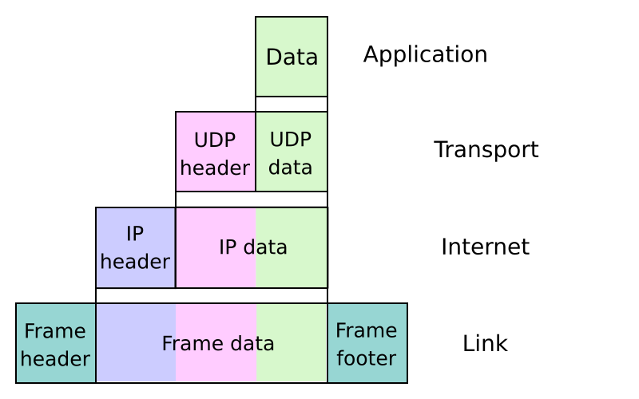

Writing a TCP/IP stack from scratch

src/net/, and the arrows are the part that turned out to need care.IP stack connections.svg. en:User:Kbrose, CC BY-SA 3.0, via Wikimedia Commons.{kind=link}
Ethernet framing, ARP, IPv4, ICMP, UDP, TCP and DNS, written here, sitting under a TLS 1.3 implementation that is also written here. Interfaces are a loopback, a wired card and a wireless one, and routing picks an interface by destination.
The rule that shapes everything
Polling never dispatches into a transport state machine. It queues.
The reason is re-entrancy in an address space with no isolation. Sending calls into address resolution, and waiting for a reply calls poll. If poll ran a state machine, a connection could re-enter its own control block while an earlier borrow of it was still live. So poll puts frames in inboxes and TCP and UDP drain their own when they are called, which makes the ownership question answerable by looking at one function.
Every layer above asks for a source address rather than assuming one exists, because the interface that will carry a packet is a routing decision and an interface without an address is a real state.
What the TCP implementation is
One connection. A single control block, and connecting aborts whatever was open before it. The builtins expose that directly instead of handing back a descriptor that corresponds to nothing.
It does the three-way handshake, sequence and acknowledgement tracking, retransmission on timeout, and an orderly close. It does not do window scaling, selective acknowledgement, congestion control beyond the simplest possible thing, or simultaneous open. For fetching a page over a local link, which is the workload, that is sufficient and the gaps are listed rather than discovered.

{kind=link}
No interrupt-driven receive
TCP advances while the shell is idle or inside a blocking call. There is no interrupt-driven receive path.
That is a real limitation with a visible consequence: a connection makes no progress while a long computation is running, and a foreground generation is a long computation. It is also the reason socket timeouts are clamped to thirty seconds, because an unbounded one inside a repaint hangs the desktop and the step budget cannot see a blocking call.
Bugs worth knowing
Ethernet pads frames to sixty bytes, so a bare forty-byte acknowledgement arrives with garbage after it. IPv4 payloads have to be trimmed to the length the header declares, and reading past it means parsing padding as data.
Certificate parsing had its own version of the same lesson. Reading a tagged field must not consume input when the tag does not match, and the pattern of trying for a value and skipping if that failed throws the value away when the optional field is absent.
What it can actually do
Resolve a name, open a connection, fetch a page over HTTP or HTTPS, send a datagram, and answer a ping. The wired path is exercised under emulation constantly. The real card in the target laptop cannot be exercised there at all, because the emulator models a different chip, and the driver says so in its own commit message rather than implying coverage it does not have.